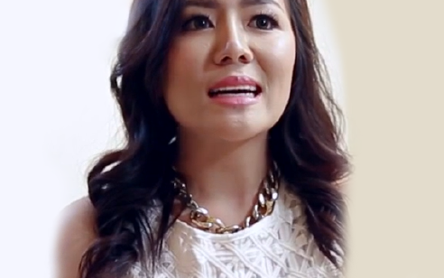

閨密情報站
閨密生活大小事
影音專區
Q & A
院所資訊
菲蜜莉雷射
閨蜜生活大小事
分享你我的生活
Danielle Lloyd / 42歲
我是個已婚媽媽，且有四個孩子，近期我將面臨巨大挑戰，就是打噴嚏也成了一個問題，很尷尬的是跟漏尿有關”這對我來說正在改變生活品質，我非常肯定，其他媽媽也有一樣的狀況！利用菲蜜麗雷射舒適療程，有效解決我的問題，讓我現在出去再也不必墊尿布了！

Rose Amanda / 47歲
當我在42歲被診斷出患有乳腺癌時，我被服用了幾種藥物。後續發現陰道內健康受到嚴重副作用。我聯繫了我的醫生，她推薦了菲蜜莉雷射，在完成3個療程後，我的陰道疼痛不舒服，異味問題也確實消失了！ 菲蜜莉幫助我，並改變我的生活。
Elisa Lunocs / 49歲
有了四個孩子後，我這幾年來十分缺乏自信，主要跟老公間性生活逐漸疏遠！在我知道菲蜜莉雷射後，我進行了治療，它賦予我新生命，跟老公關係變得更緊密了!我愛菲蜜莉~
Hanna Norldys / 45歲
我開始注意到我陰道的生理變化。 我對持續的不適，感到非常不滿。近期我進行第一次”菲蜜莉雷射治療“，我的不適感有所減輕！治療過程幾乎沒有痛感，術後也沒有修復期的困擾， 我真的非常謝謝這台儀器，讓我找回自信！
更多分享...
更多國內閨蜜分享...
服務業，從事美容工作
美容師，已結婚沒有生小孩
35歲
美容服務業，未婚
27歲
我要了解